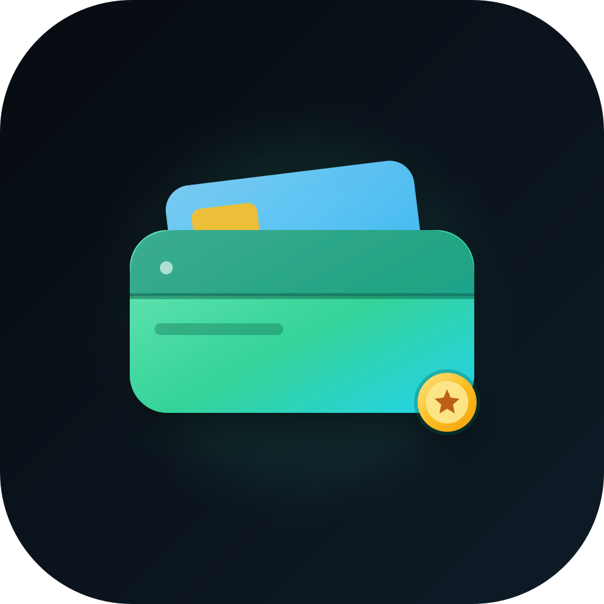
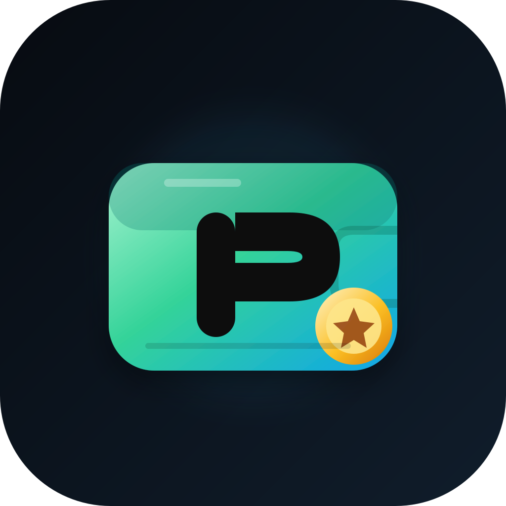
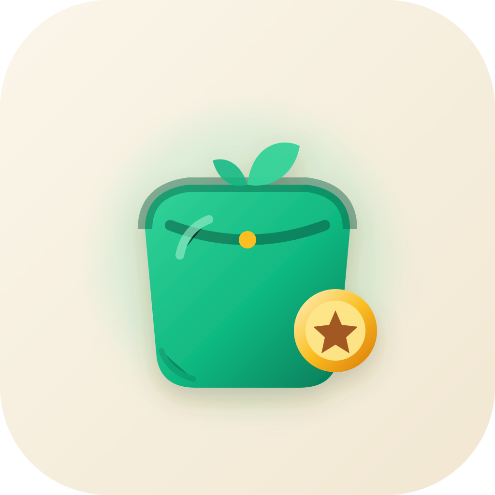

Semua versi dibuat sebagai SVG vektor — tajam di favicon, dashboard, maupun banner.
Pilih satu arah, lalu saya rapikan wordmark dan varian gelap/terangnya.

1. Minimal Wallet
Dompet rounded dengan kartu dan koin, mint–sky di atas navy. Paling dekat dengan nuansa dashboard sekarang.
app icondarkfriendly fintech
Pundariaasisten keuangan

2. Geometric P
Monogram P negatif di badan dompet, gradien mint–sky dan koin emas. Kesan premium dan mudah diingat.
monogrampremiumscalable
Pundariapersonal finance

3. Warm Pundi
Pundi/pouch organik dengan daun dan koin, emerald–amber di latar cream. Paling personal dan ramah.